引いた魂は、
赤ちゃんとして生まれる
魂の泉で魂を呼び、どの家の子にするかを決めます。親ガチャで新しい家族を村に呼ぶことも、村の夫婦の子にすることもできます。レア度の高い魂ほど、才能が花開きやすくなります。
魂を呼ぶと、村に赤ちゃんが生まれる。
恋をして、家族が増えて、何もない土地が都市になる。
あなただけの村の、100 年の物語。
基本プレイ無料（アイテム課金あり）・iPhone と Web ブラウザで遊べます
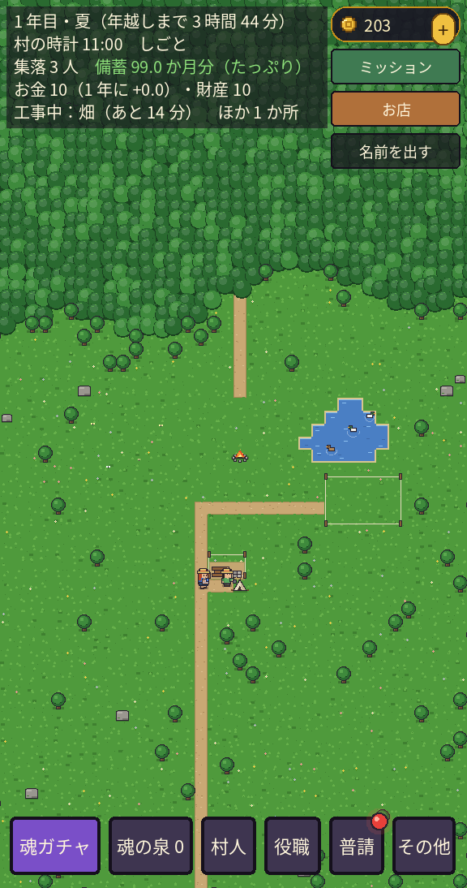
1 年目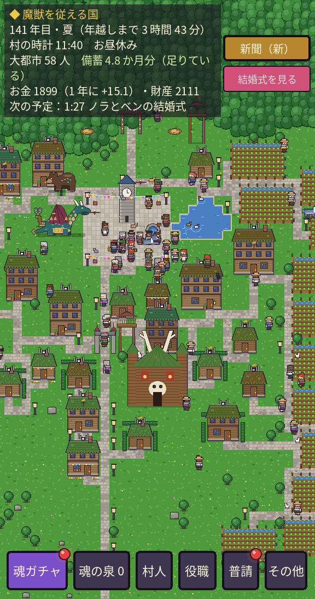
120 年目Village は、ほうっておいても時間が流れる村づくりゲームです。閉じているあいだも、村人は働き、恋をし、年をとります。開くたびに、村が少しずつ育っているのを見られます。
ほかのゲームにはない、Village だけのしくみ
魂ガチャで魂を呼んだら、次は「親ガチャ」。その魂を赤ちゃんとして迎えてくれる家族を引きます。当たった家族は村に家を建てて引っ越してきて、その家の子として赤ちゃんが生まれます。
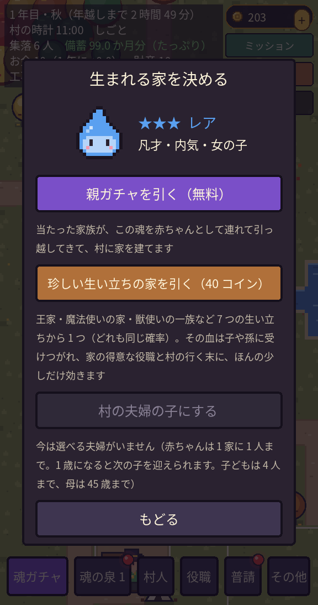
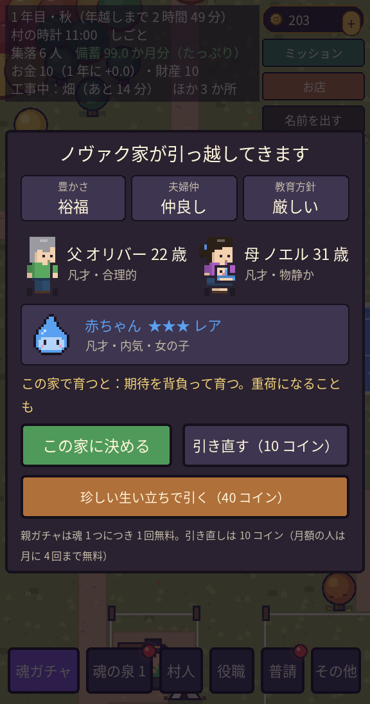
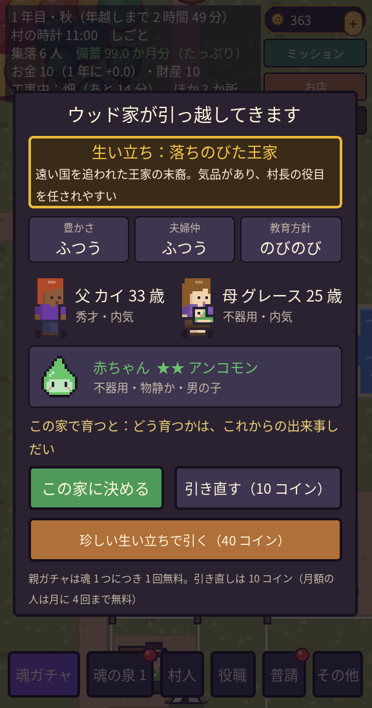
ひとりひとりの村人に、一生の物語があります。
魂の泉で魂を呼び、どの家の子にするかを決めます。親ガチャで新しい家族を村に呼ぶことも、村の夫婦の子にすることもできます。レア度の高い魂ほど、才能が花開きやすくなります。
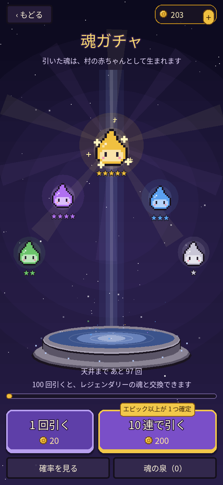

村人は、ひとりひとりが一生を生きます。結婚、誕生、跡継ぎ、そして別れ。お気に入りの村人を追いかけて、その人の一生の記録を読むこともできます。


農家・狩人・商人・職人・先生・医者……。向いている人を置くほど、村は豊かになります。天職や異才が花開くと、村が大きく変わります。
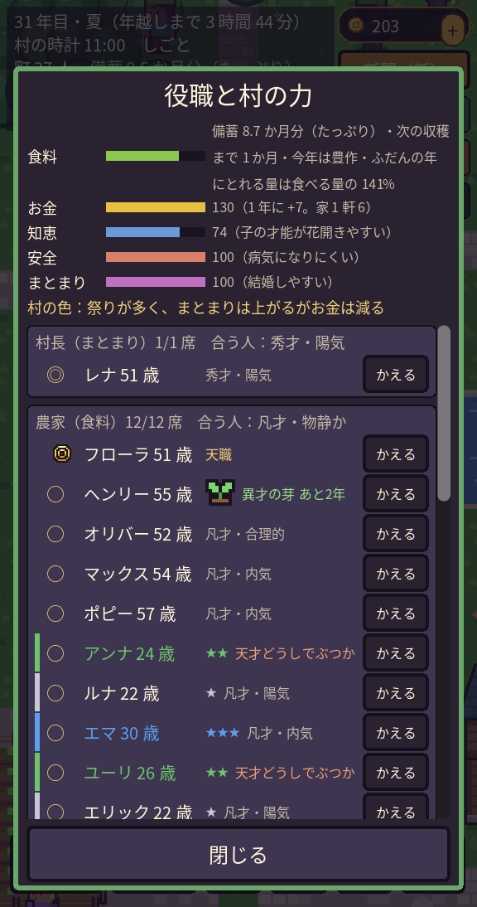
役職と村人の才能しだいで、村は魔法の国、魔獣を従える国、超近代都市……まったく別の姿に変わります。どうすればその姿になるのかは、ひみつ。みんなで推理してみてください。
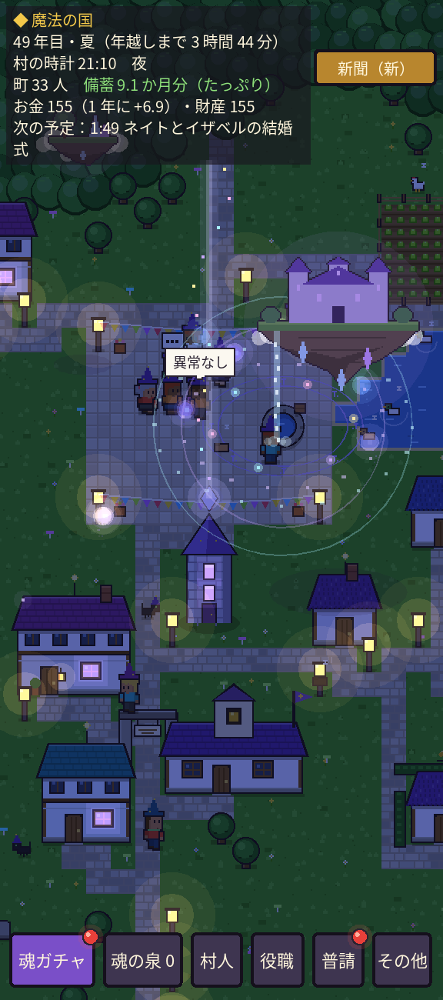
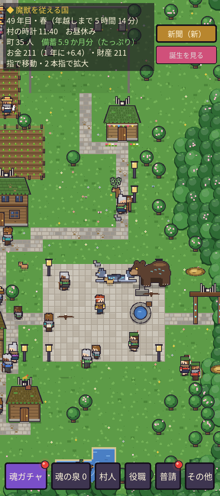
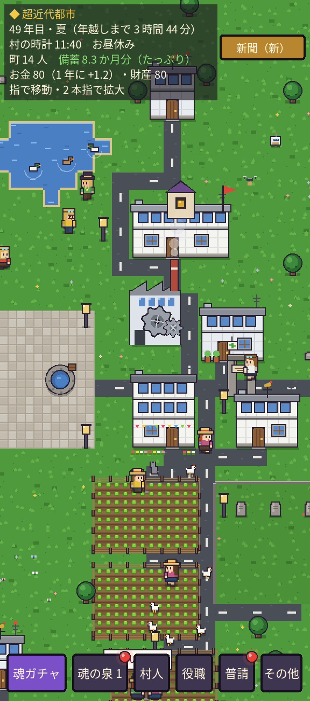
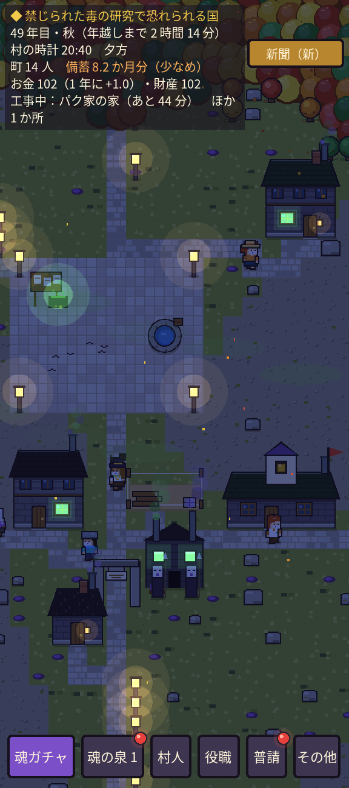
季節がめぐり、雨のあとには虹がかかります。見逃した 1 年のできごとは、村の新聞で読めます。

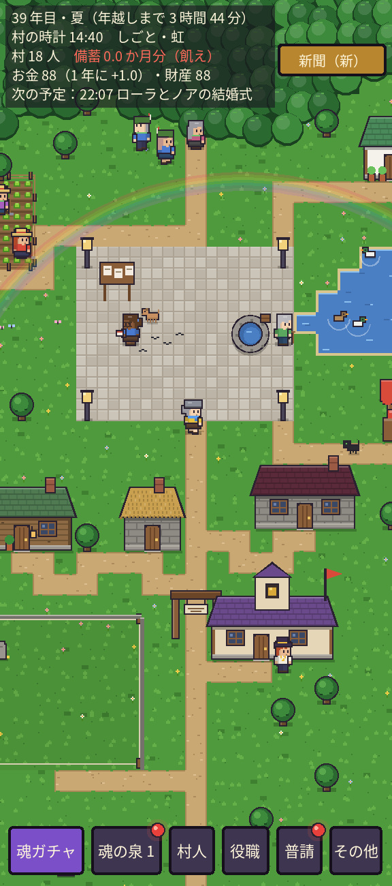
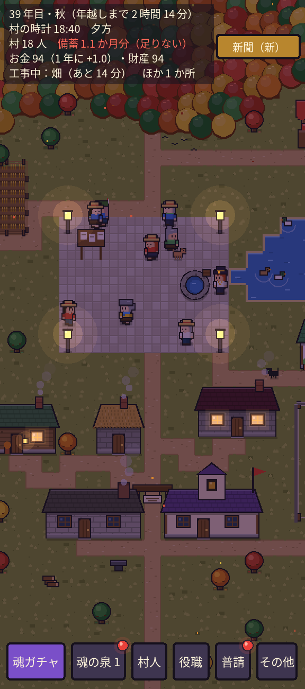
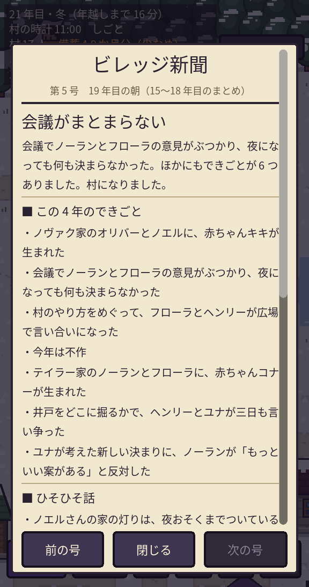
屋根や壁の色、晴れ着、広場の飾り、村の旗。家紋も自分で作れます。
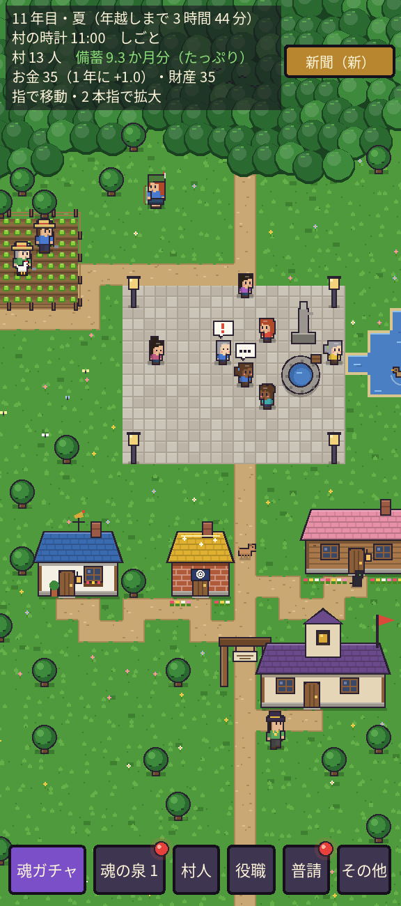


村は、集落から村、町、都市、そして大都市へ。大都市になると、村の姿ごとにまったくちがう大きな建物が建ちます。


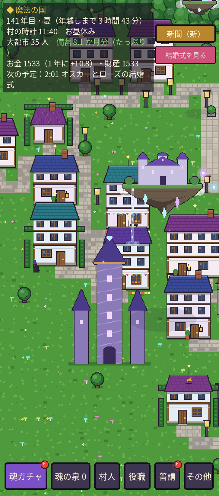

基本プレイは無料です。ランキングの点は、お金では増えません。
村づくりはすべて無料で遊べます。開いた日やミッションでコインがもらえます。
魂ガチャや、家・服・広場の見た目の品物に使えます。品物ごとに、はじめて買うときはコインが 2.5 倍です。
毎日 10 コイン、エピック以上確定券、村を 2 つ、豪華な新聞など。はじめての方は 7 日間無料です。
仲間の村と同盟を結び、やがて国へ。今後のアップデートで追加する予定です。
基本プレイは無料です。コイン（魂ガチャ・見た目の品物）と月額（500 円。はじめての方は 7 日間無料）は有料です。
ゲームの「その他」→「引き継ぎ（機種変更）」で、合言葉を決めて引き継ぎコードを作ります。新しい端末でそのコードと合言葉を入れると、村・コイン・月額がそのまま移ります。
iPhone のアプリで申しこんだときは、iPhone の「設定」→ 自分の名前 →「サブスクリプション」からやめられます。Web 版で申しこんだときは、ゲームの「月額（サポーター）」の画面の「申しこみの確認・変更・解約」からやめられます。やめても、支払い済みの期間の終わりまで特典を使えます。
13 歳以上の方を対象にしています。18 歳未満の方は、保護者の方の同意を得てからご購入ください（1 か月に購入できる金額の上限があります）。
iPhone（App Store で近日配信）と、Web ブラウザ（Safari・Chrome など）で遊べます。Android のアプリは準備中です。
不具合や購入のご相談は、メール（sashimikurage.support@gmail.com）でお知らせください。ゲームの「その他」に出る「アカウントの番号」を添えていただくと、早く確認できます。